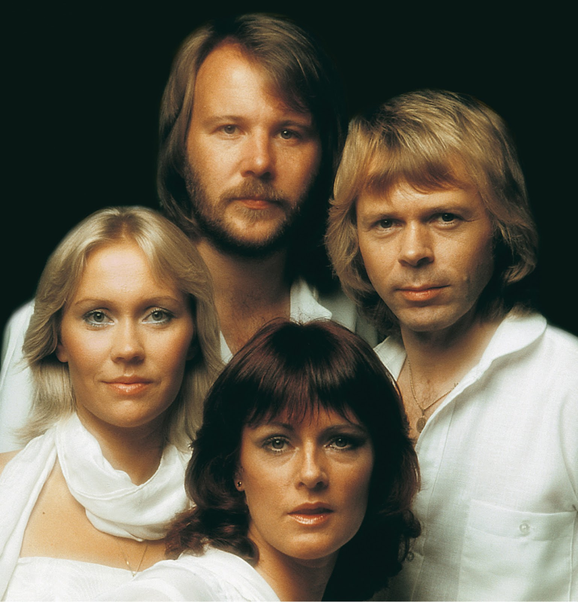

ABBA Songs

ABBA formerly named Agnetha, Björn, Benny, Anni-Frid are a Swedish pop supergroup formed in Stockholm in 1972. The group's name is an acronym of the first letters of their first names arranged as a palindrome. Mostly the girls are the one who sing and boys play the instrument but there are a few songs where Björn and Benny have also sung.
"People Need Love" became the first record to chart for the quartet in the United States, where it peaked at number 114 on the Cashbox singles chart and number 117 on the Record World singles chart.